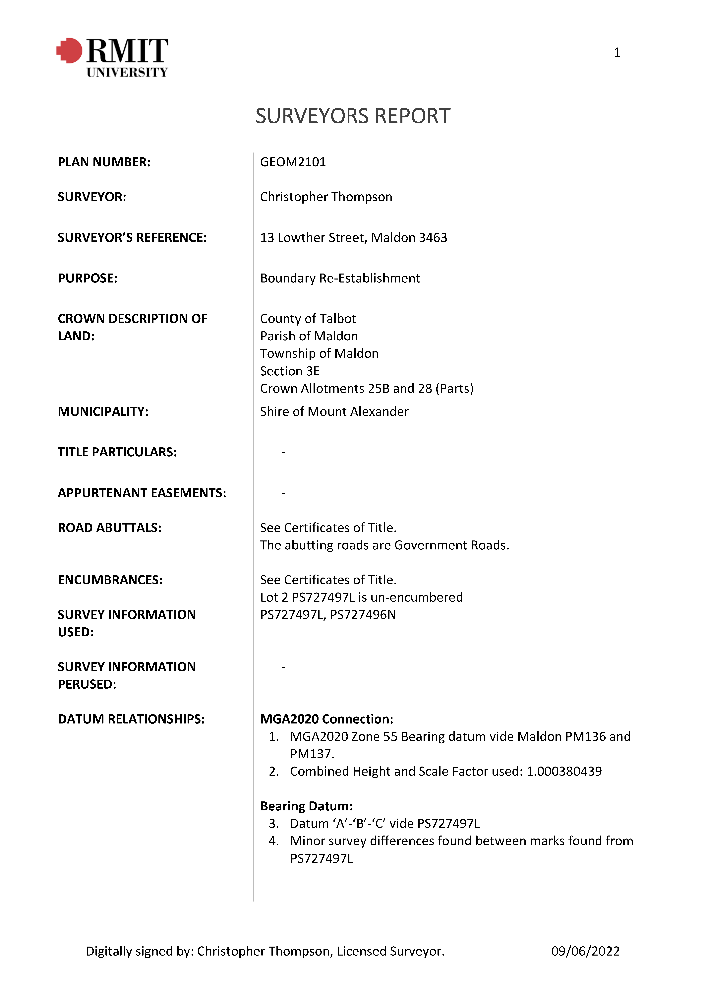
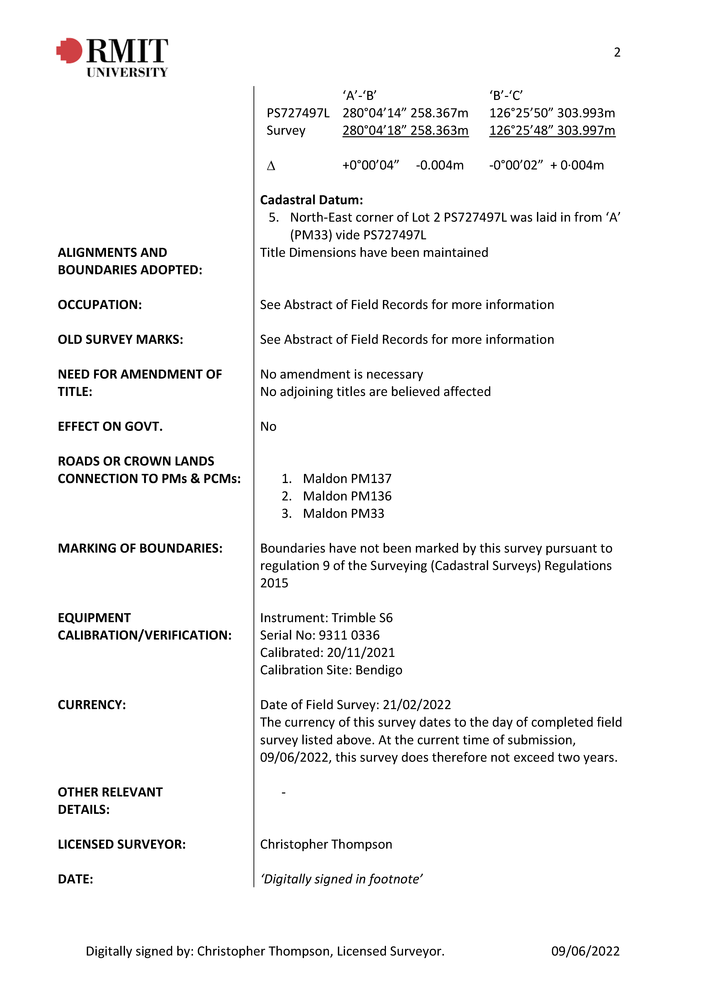
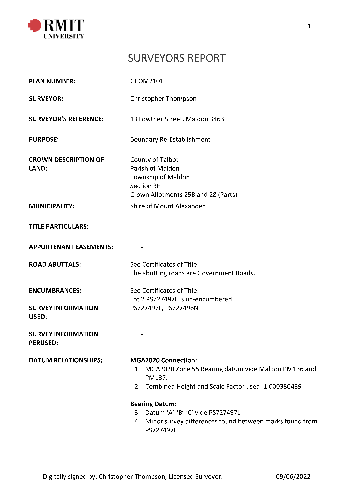
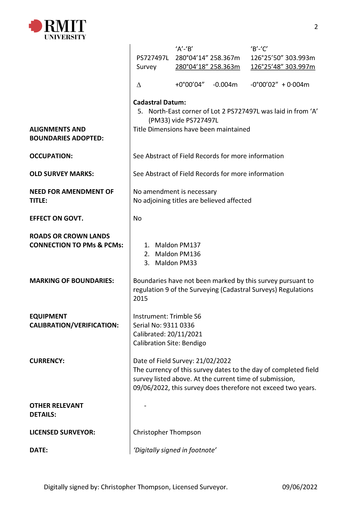

A brief introduction about myself. I have experience in diverse surveying environments, am skilled with surveying equipment, detail-oriented, and work well in teams. I efficiently operate survey equipment, gather information, and can handle multiple tasks accurately. I'm seeking a challenging full-time position that utilizes my skills and allows me to pursue professional training for a license.
My own personal hobbies outside of Surveying include various outdoor activities, such as Golf and Tennis, I am also an avid reader and enjoy spending time immersed in a good book.

Below is the Final Cartographic map that I have created as part of my course:
Note: If map display is too small, right-click the image and 'Open in new tab' to allow zooming of the map.

For the 2022 version of the Cadastral Surveying course which I completed, the main component was about the start to end process of Re-Establishing Property boundaries and Subdivision Design. The main deliverables of the subject consisted of producing:
During the field component of my cadastral surveying course, we utilised a Total Station to conduct precise measurements and gather essential data. In the office component, we employed data processing programs like LisCAD and AutoCAD to analyse and manipulate the collected data for accurate mapping and documentation. Throughout the process, we diligently adhered to survey practice directives, ensuring the completion of crucial documents related to title information with precision and compliance with industry standards.
Note: If map display is too small, right-click the image and 'Open in new tab' to allow zooming of the map.


 



As a Survey Technician since September 2020, my role has revolved around ensuring data accuracy and integrity through daily updates and quality assurance checks. I've honed my skills in operating equipment like Trimble GPS, Leica TS16 & 1205 total stations, and Leica BLK Scanners, which have greatly enhanced my effectiveness in conducting field surveys. Additionally, I've played a pivotal role in training new team members in the use of GIS and GPS software, boosting overall productivity.
One of my standout achievements has been the creation of detailed plans that visually depict boundaries and topographical features. I've also overseen technical data management, collaborated closely with engineers to keep data up-to-date, and diligently maintained the accuracy of archived information in our database. To ensure data precision, I've been thorough in checking and rectifying map errors promptly. Furthermore, I've reviewed surface models by cross-referencing ground control points with field equipment readings, contributing to the precision of our surveying work. In addition to this, I've been responsible for talking with clients and providing information on surveys, boundaries, and related topics. In my prior role as a Survey Assistant from September 2019 to September 2020, I played a pivotal role in conducting field surveys with the required precision. I consistently cross-checked computations against historical data to ensure data accuracy. My responsibilities extended to researching and monitoring utility locations around project sites, guaranteeing the integrity of project data through daily updates and quality assurance checks, and crafting detailed maps that highlighted boundaries and topographical features. Throughout both roles, I've adeptly utilised a variety of software tools, including LisCAD and AutoCAD, to compile, organise, and rectify data. I also conducted evaluations of the company's cartography products, assessing their usability and pinpointing areas for enhancement. My time at Head & Humphreys has furnished me with a solid foundation in surveying technology, techniques, data management, and team leadership. I'm truly committed to advancing my professional development and applying my skills to contribute to the success of future projects and endeavours.| AutoCAD & LisCAD | Surveying Instruments | ||
| OH&S Principles | Plan Drafting | ||
| Database Management | LIDAR Scanning | ||
| Surveying Act & Regulations | Excel Proficiency | ||
| Communication | Professionalism |
 |
 |
 |
|---|---|---|
|
Work address:
Suite 3/47 Railway Rd, Blackburn VIC 3130 |
Email Christopher Thompson here:
s3755420@student.rmit.edu.au |
Phone:
9925-2000 |